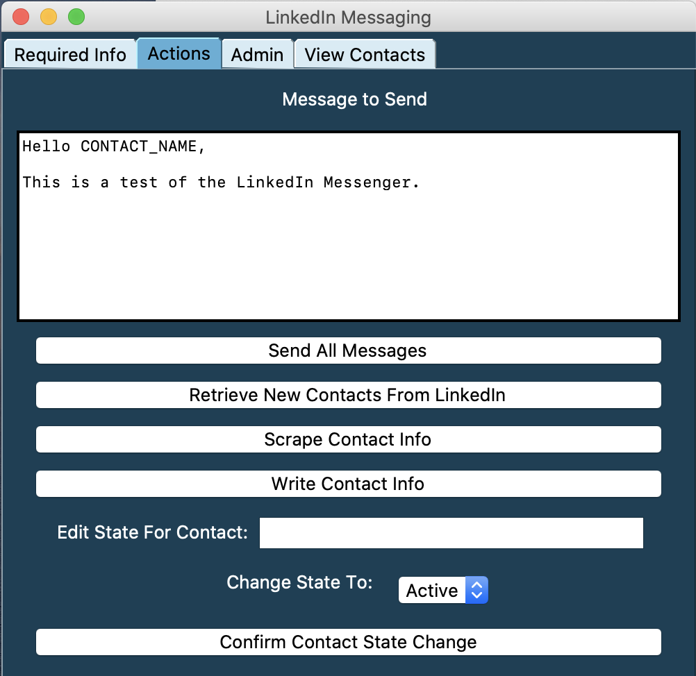
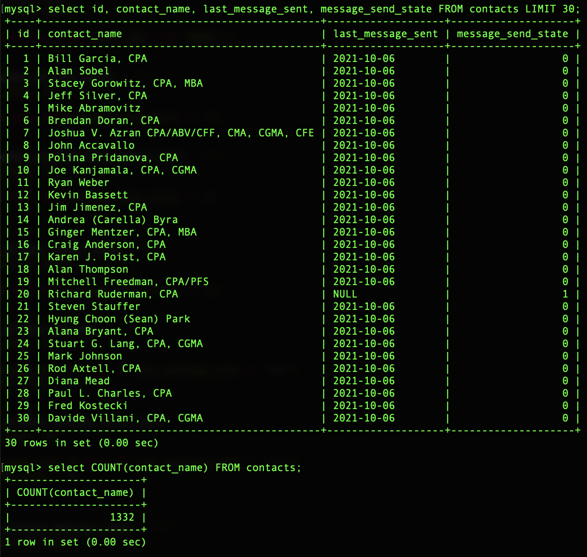

As a personal project, I worked with the Director of Communications of the company to create programs in Java and Python to automate sending LinkedIn messages by scraping the HTML of LinkedIn and interacting with it using the Selenium Framework. Previously, the company had been sending messages manually. I created a local MySQL server to hold a contact database to send messages to via LinkedIn. My final deliverable was a GUI for initiating various tasks for the company. I now sell these tasks as software-as-a-service to the company and continue to add new functionality as they need adjustments to the system. I completed the original implementation during the summer of 2019. However, I continue to iterate on the project with new requests. The product has now sent over 5,000 messages on LinkedIn.
The biggest challenge of this project was that I had to manage the project’s implementation, only receiving feedback in the form of confirmation that I was creating the correct features. I had to learn how to interact with new libraries for interacting with the HTML, and I had to decide on the schema for the contact database by myself.


Reflecting on this project, I did well in facilitating a long-term project by myself. Since the project was on my own time and would only yield personal gains if I created a polished product, I had to learn how to maintain a schedule on my own. I had a scrum board on the site Trello to remind me of the tasks that I still wanted to complete, and I organized time every week to continue implementing the project. I could have given up on the project and would have wasted my time. Additionally, I felt I did well at recognizing a problem and pushing to find a better way to solve the issue. I started off doing the manual message sends, but I saw how monotonous the task was and sought a solution to this problem.
From the project, I learned in much greater depth the processes of web-scraping. Branching off web-scraping, I learned the Selenium framework for automated browser interactions, and I also explored the foundations of this framework. Further, I learned how to create and manage a database using SQL on a MySQL server to hold the contacts database I created.
There was a data structure I had heard about in doing competitive programming problems called a Trie. I revisited this data structure in this project and saw its practicality to my application. I wanted to have auto-complete searching in my GUI to search the database, and by using this data structure, I was able to find names with similar prefixes to my search query efficiently.
As I have continued to iterate on the process, I have gotten time to reflect on this project. I liked having the ability to “be my own boss” with this project. I was able to decide what features I wanted to implement. I liked this because it allowed me to explore things like SQL databases and autocomplete functionality to build on my learning from the project while still creating a valuable product for my users. In future projects, I could improve my user interface. I currently operate it in the background because the program is somewhat fragile. By making a more robust interface, I can hand off my project to many different users as a more formal project.